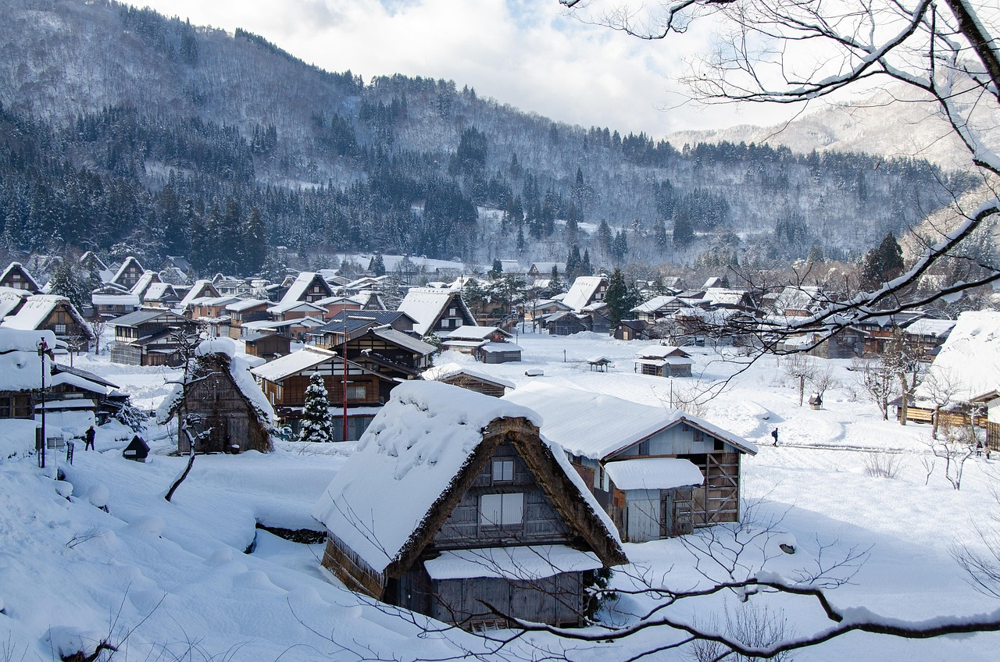
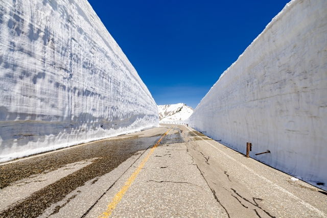

目次
富士山

富士山（ふじさん）は、日本の本州にある標高3,776メートルの火山で、日本で最も高い山です。
静岡県と山梨県の県境に位置し、美しい円錐形の山容で有名です。
富士山は日本の象徴のひとつとして親しまれ、2013年には世界文化遺産にも登録されました。
夏には多くの人が登山に訪れます。
住所：〒418-0112 静岡県富士宮市北山
白川郷

白川郷（しらかわごう）は、岐阜県にある伝統的な合掌造り（がっしょうづくり）の集落です。
三角形の茅葺き屋根（かやぶきやね）の家が立ち並び、雪の多い地方でも暮らしやすいように工夫されています。
その美しい景観や歴史的な価値から、1995年にユネスコの世界遺産に登録されました。
四季折々の自然と昔ながらの日本の生活文化を体験できる場所として、多くの観光客が訪れています。
住所：〒501-5627 岐阜県大野郡白川村荻町
サイトURL：https://shirakawa-go.gr.jp/
立山黒部アルペンルート

立山黒部アルペンルートは、富山県と長野県を結ぶ、標高3,000メートル級の北アルプスを横断する観光ルートです。
ケーブルカー、ロープウェイ、バスなどさまざまな乗り物を乗り継ぐことで、雄大な山岳景観や黒部ダム、雪の大谷（春の巨大な雪壁）などを楽しむことができます。
毎年多くの観光客が訪れ、特に新緑や紅葉、雪景色が人気です。
住所：〒930-1406 富山県中新川郡立山町芦峅寺